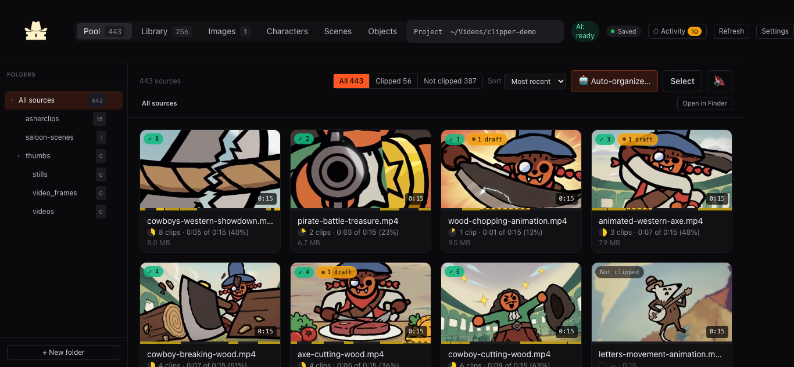
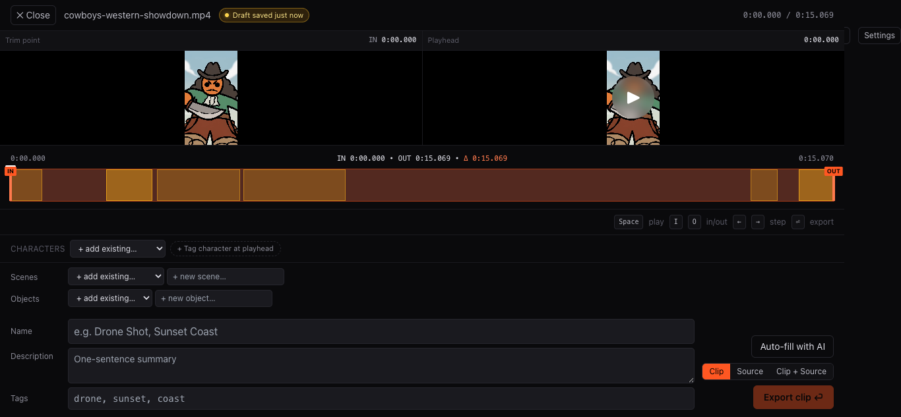

01 Ingest coverage
See the batch as footage, not files.
Pool brings source generations together for review. Keep the whole batch visible while you choose what deserves a second look.
Clipper Cowboy • Local post-production tool
Clipper Cowboy is the local shot library for creators building an IP. Save the good takes, tag the cast and world, and pull exactly the coverage the next edit needs.

The problem
The cut starts before the timeline
Generated footage arrives fast. The usable material is often scattered across batches, folders, and half-remembered prompts. Clipper Cowboy turns that pile into selects you can return to when the cast, scene, or object needs another shot.
The workflow
01 Ingest coverage
Pool brings source generations together for review. Keep the whole batch visible while you choose what deserves a second look.
02 Make selects
Set precise in and out points. Name the clip. Associate it with the character, scene, and object that make it useful in the next edit.

03 Build the library
Search through saved clips by character, scene, object, and tags. When it is time to assemble a trailer, a social cut, or the next episode, the library gives you a practical starting point instead of another search through raw generations.
Clipper Cowboy runs locally. AI organization is optional. Your catalog stays with your project.
Local projects
Frame-accurate selects
Characters / scenes / objects
Premiere-ready exports
Open source, on your machine
Bring your generated footage into a catalog built for the next cut. Run it locally, own the project, and shape the tool with the people making the work.
git clone https://github.com/princezoho/clipper-cowboy.git
cd clipper-cowboy
npm run setup
npm run devMIT licensedLocal-firstNo hosted accountMCP includedContributions welcome